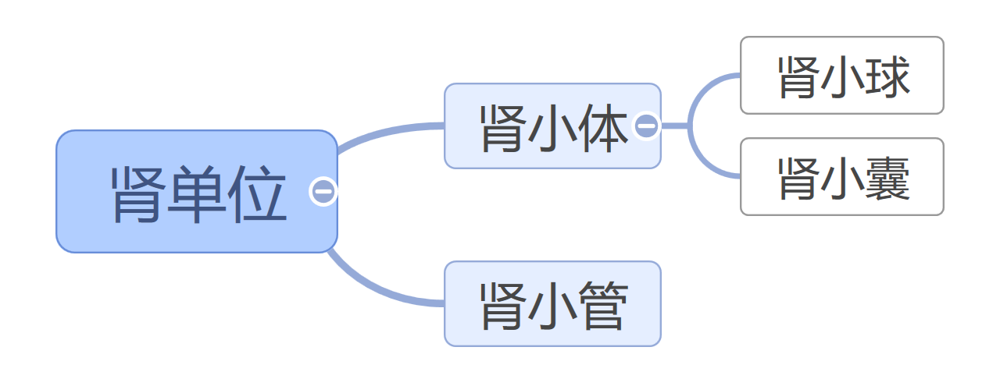

尿的形成和排出
肾的结构
肾门有三条管道，分别是动脉、静脉、输尿管
肾盂与输尿管相通
肾小球
肾小球壁只由一层细胞构成，有数十根毛细血管，血管壁上有小孔，进出肾小球的血管都是动脉血管。进入肾小球的叫做入球小动脉，出肾小球的叫做出球小动脉。入球小动脉细，出球小动脉粗。肾小球内血液压力较高。肾小球血管分支多。
作用：过滤作用---让水、无机盐、葡萄糖、尿素等物质进入肾小囊中，血细胞和（大分子）蛋白质不能进入。
过滤作用发生在肾小球和肾小囊内壁
肾小囊
肾小囊壁只由一层细胞构成，血管壁上有小孔（内含原尿）
原尿--血液经过肾小球过滤后形成原尿
成分：水、无机盐、葡萄糖、尿素等（这里一般不提蛋白质，但是实际上有少量的小分子蛋白质）
肾小管
重新吸收全部葡萄糖、大部分水和部分无机盐和小分子蛋白质（重吸收作用） （重吸收的物质进入毛细血管）
肾小球、肾小囊、肾小管组成了肾单位（一个肾中大约有100万个肾单位）（肾单位是肾的结构和功能单位）
肾脏内的血液流经路劲
肾动脉→入球小动脉→肾小球→出球小动脉→肾小管周围的毛细血管→肾静脉
尿液产生过程
血液流经肾小球，除血细胞和大分子蛋白以外，血浆中的一些水、无机盐、葡萄糖和尿素等物质由肾小球过滤到肾小囊中，形成原尿→原尿中大部分水、全部葡萄糖、部分无机盐和小分子蛋白质被肾小管重吸收进入毛细血管→输尿管输送尿液→膀胱暂时储存尿液→尿道将尿液排出体外→体外
简单来说：血液通过过滤变成原尿→原尿通过重吸收变成尿液
各物质的路径
- 蛋白质：肾动脉→肾静脉
- 红细胞：肾动脉→肾静脉
- 水：肾动脉→一部分通过扩散作用进入肾小囊→在肾小管处绝大部分被重新吸收回血液，剩下一部分随尿液排出体外
- 葡萄糖：肾动脉→一部分进入肾小囊中→在肾小管处全部被重吸收进入血液→肾静脉
- 无机盐：肾动脉→一部分进入肾小囊→在肾小管中一部分被重吸收进入血液，另一部分随尿液排出体外
- 尿素：肾动脉→一部分进入肾小囊→肾小管不会重吸收→随着尿液排出体外
肾小球、肾小囊内壁利于过滤作用的结构特点
- 肾小球毛细血管壁与肾小囊内壁有孔
- 肾小球毛细血管壁只由一层上皮细胞构成（同时毛细血管多）
- 肾小囊壁只由一层上皮细胞构成
- 肾小球毛细血管壁与肾小囊内壁紧贴
肾小管利于重吸收作用的结构特点
- 肾小管很长
- 肾小管壁很薄，只由一层上皮细胞构成
- 肾小管外有丰富的毛细血管
- 肾小管细胞朝向管腔内的细胞膜有毛刷状突起
尿液成分：水、无机盐、尿素等
排尿的意义
- 排出代谢废物
- 调节体内水和无机盐的平衡
- 维持组织细胞的正常生理功能
常见疾病
- 如果一个人的尿液中出现了蛋白质（蛋白尿）是肾小球出现异常
- 如果一个人的尿液中出现了血细胞（血尿）说明这个人的肾小球出现异常
- 如果一个人的尿液中出现了葡萄糖是肾小管出了问题（无法重吸收）
由于肾小管重吸收能力有限，所以如果血液中葡萄糖过多（血糖过高）超过了肾小管吸收能力，则尿液中会出现葡萄糖，称为“糖尿病”。
泌尿系统与健康-泌尿系统的疾病与防治
尿路感染
- 简称尿感，是病原体在尿路中生长、繁殖而引起的疾病
- 注意事项：加强自我管理、清淡饮食
肾结石
- 肾结石是由尿中的一些成分在肾脏内形成结石。
- 典型症状：腰部疼痛、血尿（症状很轻微）、排石、尿路感染
- 形成过程：某些因素造成尿液中成石物质浓度升高或者溶解度降低，导致不能全部溶于水，便以结晶的方式析出，最终形成肾结石
- 病因：代谢异常、局部因素（大部分是在其他病变基础上形成）、药物因素（浓度高溶解度低）、气候（一般是夏季）、饮食因素（未经净化含较多矿物质的水）
- 其他泌尿系结石 例如输尿管结石、膀胱结石、尿道结石
如何防治肾结石
- 清淡饮食、保持饮水量
- 加强体育运动
- 减少不规律饮食
慢性肾衰竭
典型症状：恶心、呕吐、贫血、出血
病因：由于各种疾病导致肾单位不可逆性的破坏，以至于残存的肾单位不足以排出代谢废物
生活习惯与泌尿健康
- 憋尿：易引发尿路感染
- 定时定量饮水:2500ml-3000ml（降低泌尿系统的发病率，为皮肤补水、促进消化和吸收的功能）